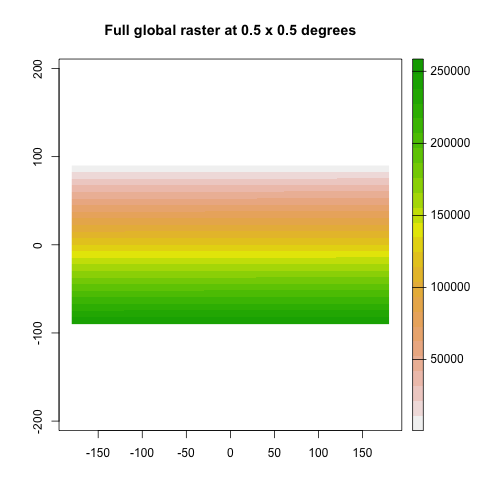
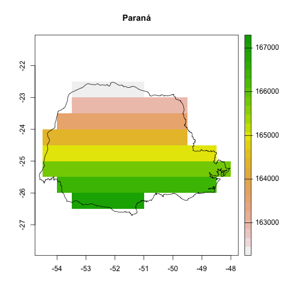
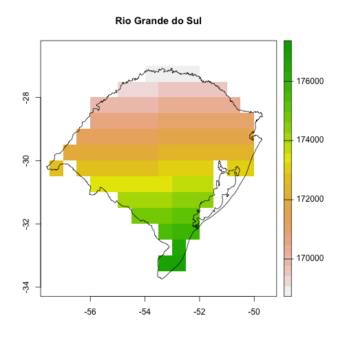

vignettes/nasapower_states_example.Rmd
nasapower_states_example.RmdFetching POWER data using nasapower for small, single queries is easy and straightforward. However, if you wish to have daily data for a larger area it can be trickier to implement.
Here I demonstrate fetching multiple seasons of rainfall data for two states in Brazil and two growing seasons using nasapower. An example of this use case can be found in Emerson Del Ponte’s slide deck from the International Congress of Plant Pathology, 2019, “Can rainfall be a useful predictor of epidemic risk across temporal and spatial scales?”
To get the rainfall data for the states in Brazil, we will use nasapower (Sparks 2019), rnaturalearth (South 2017), terra (Hijmans 2020) packages to fetch the data, dplyr (Wickham et al. 2019) for data manipulation and ggplot2 (Wickham 2016) to visualise the final data.
To get the state data we will use rnaturalearth to download simple features data for Brazil and subset the states Rio Grande do Sul and Paraná into separate objects.
BRA <- ne_states(country = "Brazil",
returnclass = "sf")
# subset spatial objects of only the states of interest
RS <- BRA[BRA$name_en == "Rio Grande do Sul", ]
PR <- BRA[BRA$name_en == "Paraná", ]Now that we have objects for the states we can create a raster grid to represent the 0.5 x 0.5 degree grid that is the NASA-POWER data and select only cells that fall within the two states of interest.
Create a grid of 0.5 x 0.5 arc degrees and extract the x, y values from it for each state to use the coordinates to query the POWER data.
# create a global 0.5 x 0.5 degree raster object
r <- rast(xmn = -180,
xmx = 180,
ymn = -90,
ymx = 90,
resolution = 0.5)
values(r) <- 1:ncell(r)
plot(r, main = "Full global raster at 0.5 x 0.5 degrees")
# Extract the two states, first crop by bounding box, then mask the raster
PR_coords <- crop(r, PR)
RS_coords <- crop(r, RS)
PR_coords <- mask(PR_coords, vect(PR))
plot(PR_coords, main = "Paraná")
# add the sf object, note the use of indexing to plot only the first column
# to avoid warning messages
plot(PR[, 1], col = NA, add = TRUE)
RS_coords <- mask(RS_coords, vect(RS))
plot(RS_coords, main = "Rio Grande do Sul")
plot(RS[, 1], col = NA, add = TRUE)
# extract the centroid values of the cells to use querying the POWER data
PR_coords <-
na.omit(as.data.frame(PR_coords, xy = TRUE))
RS_coords <-
na.omit(as.data.frame(RS_coords, xy = TRUE))
names(PR_coords) <- names(RS_coords) <- c("LON", "LAT")
coords <- rbind(PR_coords, RS_coords)WARNING This step is time intensive. WARNING
Using nested for() loops, query the NASA-POWER database to gather precipitation data for the states where rust was reported and save a CSV file of the rainfall.
power <- vector(mode = "list", 2) # hold two growing seasons
precip <- vector(mode = "list", nrow(coords)) # hold the cells
seasons <- list(
c("2014-11-01", "2015-03-31"),
c("2015-11-01", "2016-03-31")
)
for (i in seq_along(seasons)) {
# two "seasons" (outer loop 2x)
season <- seasons[[i]]
# inner loop for each pair coords
for (j in seq_along(1:nrow(coords))) {
NA_df <-
data.frame(
LON = coords[1, 1],
LAT = coords[1, 2],
YEAR = NA,
MM = NA,
DD = NA,
DOY = NA,
YYYYMMDD = NA,
PRECTOT = NA
)
p_get_power <- possibly(get_power, otherwise = NA_df)
# 312 coordinate pairs (inner loop 312x)
site <- as.numeric(coords[j,])
power_precip <- p_get_power(
community = "AG",
lonlat = site,
pars = "PRECTOT",
dates = season,
temporal_average = "DAILY"
)
precip[[j]] <- power_precip
Sys.sleep(5) # wait 5 seconds between requests so we don't hammer the server
}
precip_df <- bind_rows(precip)
power[[i]] <- precip_df
}
power_df <- bind_rows(power)
# adds states to rows
power_df <- data.frame(STATE = c(rep("PR", nrow(PR_coords)),
rep("RS", nrow(RS_coords))),
power_df)These data were obtained from the NASA Langley Research Center POWER Project funded through the NASA Earth Science Directorate Applied Science Program.
Lionel Henry and Hadley Wickham (2019). purrr: Functional Programming Tools. R package version 0.3.2. https://CRAN.R-project.org/package=purrr
Robert J. Hijmans (2020). terra: Spatial Data Analysis. R package version 0.7-11. https://CRAN.R-project.org/package=terra
Andy South (2017). rnaturalearth: World Map Data from Natural Earth. R package version 0.1.0. https://CRAN.R-project.org/package=rnaturalearth
Adam Sparks (2018). nasapower: A NASA POWER Global Meteorology, Surface Solar Energy and Climatology Data Client for R. Journal of Open Source Software, 3(30), 1035, https://doi.org/10.21105/joss.01035
Adam Sparks (2019). nasapower: NASA-POWER Data from R. R package version 1.1.2, <URL: https://CRAN.R-project.org/package=nasapower>.
Hadley Wickham. ggplot2: Elegant Graphics for Data Analysis. Springer-Verlag New York, 2016.
Hadley Wickham, Romain François, Lionel Henry and Kirill Müller (2019). dplyr: A Grammar of Data Manipulation. R package version 0.8.3. https://CRAN.R-project.org/package=dplyr
sessioninfo::session_info()
#> ─ Session info ───────────────────────────────────────────────────
#> setting value
#> version R version 4.0.3 (2020-10-10)
#> os macOS Catalina 10.15.7
#> system x86_64, darwin17.0
#> ui RStudio
#> language (EN)
#> collate en_AU.UTF-8
#> ctype en_AU.UTF-8
#> tz Australia/Brisbane
#> date 2020-10-24
#>
#> ─ Packages ───────────────────────────────────────────────────────
#> package * version date lib
#> assertthat 0.2.1 2019-03-21 [1]
#> backports 1.1.10 2020-09-15 [1]
#> bit 4.0.4 2020-08-04 [1]
#> bit64 4.0.5 2020-08-30 [1]
#> blob 1.2.1 2020-01-20 [1]
#> callr 3.5.1 2020-10-13 [1]
#> class 7.3-17 2020-04-26 [2]
#> classInt 0.4-3 2020-04-07 [1]
#> cli 2.1.0 2020-10-12 [1]
#> codetools 0.2-16 2018-12-24 [2]
#> colorspace 1.4-1 2019-03-18 [1]
#> crancache 0.0.0.9001 2020-09-19 [1]
#> cranlike 1.0.2 2018-11-26 [1]
#> crayon 1.3.4.9000 2020-09-19 [1]
#> crul 1.0.0 2020-07-30 [1]
#> curl 4.3 2019-12-02 [1]
#> DBI 1.1.0 2019-12-15 [1]
#> debugme 1.1.0 2017-10-22 [1]
#> desc 1.2.0 2018-05-01 [1]
#> devtools 2.3.2 2020-09-18 [1]
#> digest 0.6.26 2020-10-17 [1]
#> dplyr * 1.0.2 2020-08-18 [1]
#> e1071 1.7-4 2020-10-14 [1]
#> ellipsis 0.3.1 2020-05-15 [1]
#> evaluate 0.14 2019-05-28 [1]
#> fansi 0.4.1 2020-01-08 [1]
#> fs 1.5.0 2020-07-31 [1]
#> generics 0.0.2 2018-11-29 [1]
#> ggplot2 * 3.3.2 2020-06-19 [1]
#> glue 1.4.2 2020-08-27 [1]
#> gtable 0.3.0 2019-03-25 [1]
#> highr 0.8 2019-03-20 [1]
#> hms 0.5.3 2020-01-08 [1]
#> httpcode 0.3.0 2020-04-10 [1]
#> jsonlite 1.7.1 2020-09-07 [1]
#> KernSmooth 2.23-17 2020-04-26 [2]
#> knitr * 1.30 2020-09-22 [1]
#> lattice 0.20-41 2020-04-02 [2]
#> lifecycle 0.2.0 2020-03-06 [1]
#> lubridate 1.7.9 2020-06-08 [1]
#> magrittr 1.5 2014-11-22 [1]
#> memoise 1.1.0 2017-04-21 [1]
#> munsell 0.5.0 2018-06-12 [1]
#> nasapower * 3.0.0.9000 2020-10-18 [1]
#> parsedate 1.2.0 2019-05-08 [1]
#> pillar 1.4.6 2020-07-10 [1]
#> pkgbuild 1.1.0 2020-07-13 [1]
#> pkgconfig 2.0.3 2019-09-22 [1]
#> pkgload 1.1.0 2020-05-29 [1]
#> prettyunits 1.1.1 2020-01-24 [1]
#> processx 3.4.4 2020-09-03 [1]
#> ps 1.4.0 2020-10-07 [1]
#> purrr * 0.3.4 2020-04-17 [1]
#> R6 2.4.1 2019-11-12 [1]
#> rappdirs 0.3.1 2016-03-28 [1]
#> raster 3.3-13 2020-07-17 [1]
#> Rcpp 1.0.5 2020-07-06 [1]
#> readr 1.4.0 2020-10-05 [1]
#> rematch2 2.1.2 2020-05-01 [1]
#> remotes 2.2.0 2020-07-21 [1]
#> rgdal 1.5-18 2020-10-13 [1]
#> rgeos 0.5-5 2020-09-07 [1]
#> rlang 0.4.8 2020-10-08 [1]
#> rnaturalearth * 0.1.0 2017-03-21 [1]
#> rnaturalearthhires 0.2.0 2020-08-25 [1]
#> rprojroot 1.3-2 2018-01-03 [1]
#> RSQLite 2.2.1 2020-09-30 [1]
#> rstudioapi 0.11 2020-02-07 [1]
#> scales 1.1.1 2020-05-11 [1]
#> sessioninfo 1.1.1 2018-11-05 [1]
#> sf 0.9-6 2020-09-13 [1]
#> sp 1.4-4 2020-10-07 [1]
#> stringi 1.5.3 2020-09-09 [1]
#> stringr 1.4.0 2019-02-10 [1]
#> terra * 0.8-6 2020-08-01 [1]
#> testthat 2.3.2 2020-03-02 [1]
#> tibble 3.0.4 2020-10-12 [1]
#> tidyselect 1.1.0 2020-05-11 [1]
#> triebeard 0.3.0 2016-08-04 [1]
#> units 0.6-7 2020-06-13 [1]
#> urltools 1.7.3 2019-04-14 [1]
#> usethis 1.6.3 2020-09-17 [1]
#> utf8 1.1.4 2018-05-24 [1]
#> vctrs 0.3.4 2020-08-29 [1]
#> withr 2.3.0 2020-09-22 [1]
#> xfun 0.18 2020-09-29 [1]
#> source
#> CRAN (R 4.0.2)
#> CRAN (R 4.0.2)
#> CRAN (R 4.0.2)
#> CRAN (R 4.0.2)
#> CRAN (R 4.0.2)
#> CRAN (R 4.0.3)
#> CRAN (R 4.0.3)
#> CRAN (R 4.0.2)
#> CRAN (R 4.0.3)
#> CRAN (R 4.0.3)
#> CRAN (R 4.0.2)
#> Github (r-lib/crancache@7ea4e47)
#> CRAN (R 4.0.2)
#> Github (r-lib/crayon@6b3f0c6)
#> CRAN (R 4.0.2)
#> CRAN (R 4.0.1)
#> CRAN (R 4.0.2)
#> CRAN (R 4.0.2)
#> CRAN (R 4.0.2)
#> CRAN (R 4.0.2)
#> CRAN (R 4.0.3)
#> CRAN (R 4.0.2)
#> CRAN (R 4.0.2)
#> CRAN (R 4.0.2)
#> CRAN (R 4.0.1)
#> CRAN (R 4.0.2)
#> CRAN (R 4.0.2)
#> CRAN (R 4.0.2)
#> CRAN (R 4.0.2)
#> CRAN (R 4.0.2)
#> CRAN (R 4.0.2)
#> CRAN (R 4.0.2)
#> CRAN (R 4.0.2)
#> CRAN (R 4.0.2)
#> CRAN (R 4.0.2)
#> CRAN (R 4.0.3)
#> CRAN (R 4.0.2)
#> CRAN (R 4.0.3)
#> CRAN (R 4.0.2)
#> CRAN (R 4.0.2)
#> CRAN (R 4.0.2)
#> CRAN (R 4.0.2)
#> CRAN (R 4.0.2)
#> CRAN (R 4.0.3)
#> CRAN (R 4.0.2)
#> CRAN (R 4.0.2)
#> CRAN (R 4.0.2)
#> CRAN (R 4.0.2)
#> CRAN (R 4.0.2)
#> CRAN (R 4.0.2)
#> CRAN (R 4.0.2)
#> CRAN (R 4.0.2)
#> CRAN (R 4.0.2)
#> CRAN (R 4.0.2)
#> CRAN (R 4.0.2)
#> CRAN (R 4.0.2)
#> CRAN (R 4.0.2)
#> CRAN (R 4.0.2)
#> CRAN (R 4.0.2)
#> CRAN (R 4.0.2)
#> CRAN (R 4.0.3)
#> CRAN (R 4.0.2)
#> CRAN (R 4.0.2)
#> CRAN (R 4.0.2)
#> local
#> CRAN (R 4.0.2)
#> CRAN (R 4.0.2)
#> CRAN (R 4.0.2)
#> CRAN (R 4.0.2)
#> CRAN (R 4.0.2)
#> CRAN (R 4.0.2)
#> CRAN (R 4.0.2)
#> CRAN (R 4.0.2)
#> CRAN (R 4.0.2)
#> CRAN (R 4.0.2)
#> CRAN (R 4.0.2)
#> CRAN (R 4.0.3)
#> CRAN (R 4.0.2)
#> CRAN (R 4.0.2)
#> CRAN (R 4.0.2)
#> CRAN (R 4.0.2)
#> CRAN (R 4.0.2)
#> CRAN (R 4.0.2)
#> CRAN (R 4.0.2)
#> CRAN (R 4.0.2)
#> CRAN (R 4.0.2)
#>
#> [1] /Users/adamsparks/.R/library
#> [2] /Library/Frameworks/R.framework/Versions/4.0/Resources/library